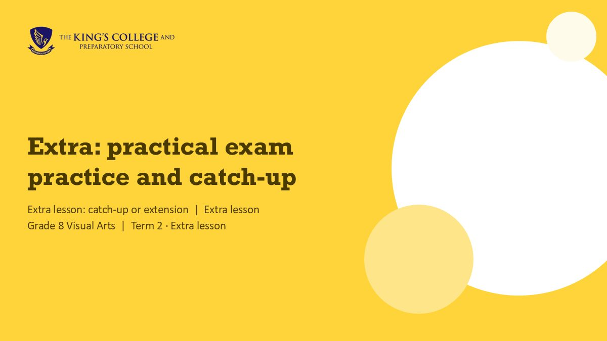

Term 2 · Extra lesson · Extra lesson: catch-up
Extra: practical exam practice and catch-up
Start here
Today I will
- Today I will work on one of my exam gaps
- Today I will practise more exam-style questions
- Today I will finish any outstanding Term 2 work
Think first
After the practice paper, what was your biggest gap? Today is your chance to close it.
Words to Know
| Word | Meaning |
|---|---|
| Observation drawing | Drawing what you actually see in front of you. |
| Tonal range | The spread of values in a drawing, from the lightest light to the darkest dark. |
| Reflective surface | A shiny surface that shows sharp highlights and reflections. |
| Visual analysis | Looking at and writing about an artwork in five levels. |
Slides

Notes
Practise for the practical exam (a textured and a shiny object in graphite) or finish Term 2 work.
Two paths today
| Catch-up path | Exam practice path |
|---|---|
| Finish the textured-and-smooth drawing | Write the second practice set |
| Finish the Sekoto analysis | Mark it with the memo |
| Check your journal pages are labelled | Make flash cards for the words you missed |
Flash-card revision
- Write the word: One art word on the front of a small card.
- Write the meaning: The meaning in your own words on the back.
- Add a sketch: A tiny drawing that shows the word, such as a cast shadow.
- Test a partner: Swap cards and quiz each other.
Remember
Practice does not make perfect; it makes progress.
Practical
You need: Activity Book, Vocabulary booklet, pencils, object set-ups
Practice set or catch-up
- Check your list: finish any outstanding Term 2 drawing or analysis first.
- If you are up to date, write the second practice set (25 minutes).
- Mark it with the memo and compare it with your first practice paper.
- Make five flash cards for the words or ideas you still find hard.
- Write one sentence: did you close your gap?
Test yourself
- How do you show that a surface is shiny?
- Which level of visual analysis gives the context?
- Which gap did you work on today?
Show answers
1. Smooth blending, sharp highlights and strong darks side by side. 2. Level 4: context (zeitgeist). 3. Own answer.
Finished early?
Shine in three marks
Practise the three things that make a surface look shiny.
- Draw a small circle in your visual journal.
- Blend it smoothly from light to dark.
- Push one area very dark with a 6B.
- Right next to the dark, lift one sharp, small highlight with a putty eraser.